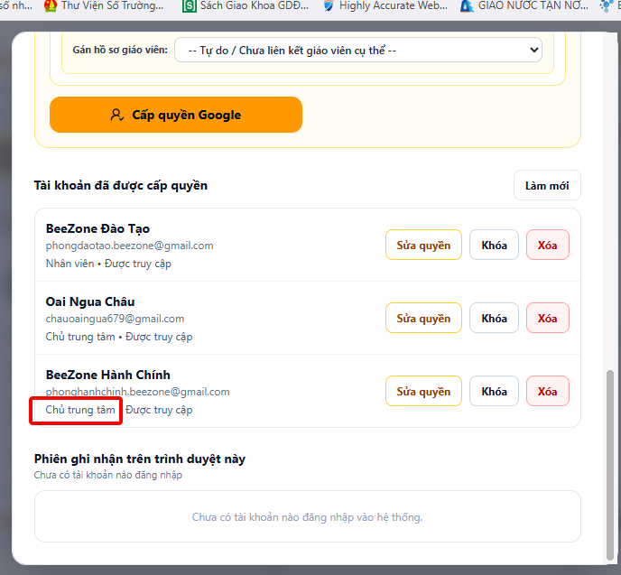
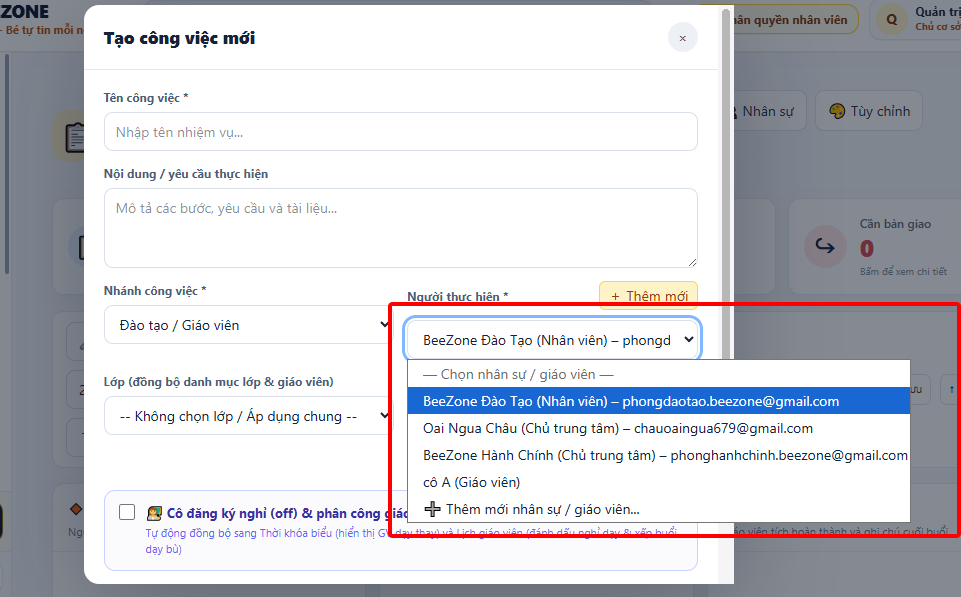
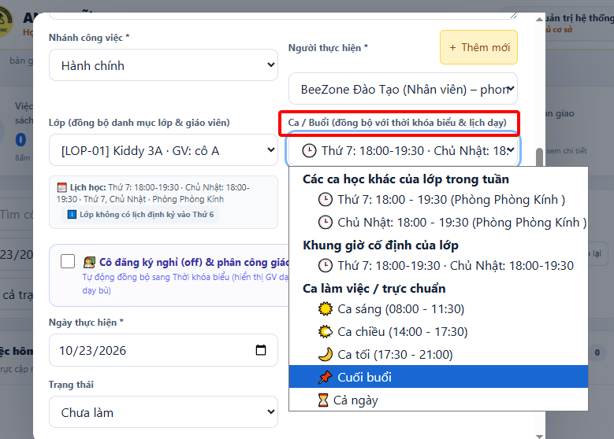
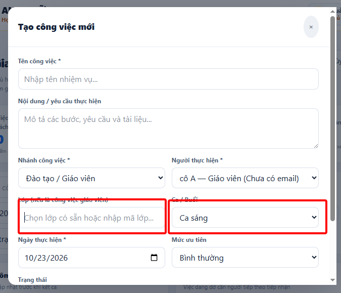
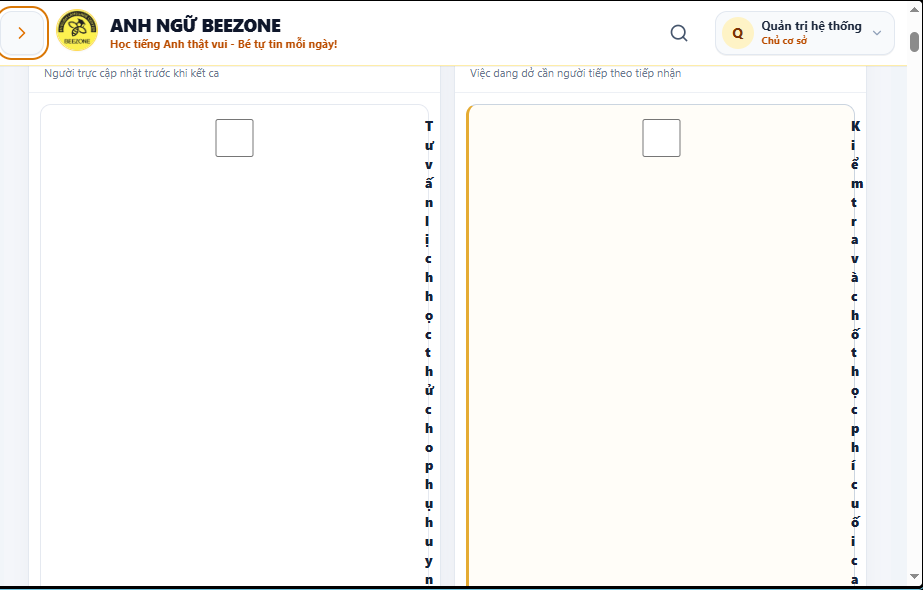

Hệ thống Quản lý Trung tâm & Vận hành Giảng dạy
Để trung tâm vận hành trôi chảy, chuyên nghiệp và bảo mật thông tin nội bộ, hệ thống chia thành 2 nhánh công việc độc lập:
chauoaingua679@gmail.com) và Hành chính (phonghanhchinh.beezone@gmail.com).phongdaotao.beezone@gmail.com) và các Giáo viên lớp học.
Nhân viên Đào tạo đăng nhập vào phân hệ và thực hiện giao việc cho giáo viên theo từng lớp học với các bước sau:
Cửa sổ tạo nhiệm vụ mở ra. Đối với tài khoản Đào tạo, trường Nhánh công việc được cố định là Đào tạo / Giáo viên để tập trung đúng chức năng chuyên môn.
• Tại ô Lớp: Chọn lớp có sẵn trong trung tâm (ví dụ [LOP-01] Kiddy 3A). Hệ thống tự động nhận diện giáo viên phụ trách của lớp đó.
• Tại ô Người thực hiện: Hiển thị giáo viên lớp học hoặc nhân sự đào tạo. Nếu cần bổ sung giáo viên mới, có thể bấm nút ＋ Thêm mới hoặc chọn dòng ➕ Thêm mới nhân sự / giáo viên... để tạo trực tiếp mà không cần thoát ra.

Khi chọn lớp học, dropdown Ca / Buổi sẽ tự động hiển thị:
1. Các ca học trong tuần của lớp: Ví dụ Thứ 7: 18:00 - 19:30 (Phòng Kính), Chủ Nhật: 18:00 - 19:30.
2. Các ca chuẩn: Ca sáng, Ca chiều, Ca tối, Cuối buổi, Cả ngày.
3. Tự nhập giờ thủ công: Bấm nút ＋ Tự nhập giờ để nhập bất kỳ khung giờ hoặc buổi dạy đặc thù nào do Đào tạo hoặc Quản lý chỉ định.

Nếu giáo viên có đơn xin nghỉ ca dạy đó:
• Tick chọn ô 👩🏫 Cô đăng ký nghỉ (off) & phân công giáo viên dạy bù.
• Chọn Giáo viên dạy thay trong danh sách.
• Khi bấm lưu: Hệ thống tự động đồng bộ sang Thời khóa biểu và Lịch giáo viên, ghi nhận cô nghỉ và phân công giáo viên dạy thay chuẩn xác.

Giáo viên đăng nhập bằng tài khoản được cấp quyền. Màn hình của giáo viên sẽ hiển thị tập trung vào Việc giáo viên theo lớp và các thao tác cực kỳ đơn giản:
• Bấm vào ô vuông tick (checkbox) ☑ ngay trước tiêu đề nhiệm vụ trên thẻ công việc, hoặc bấm nút ✓ Hoàn thành.
• Thẻ công việc chuyển sang màu xanh lá hoàn thành và hệ thống tự động ghi nhận thời gian hoàn thành (ví dụ: ✓ Xong 19:35).
• Nếu buổi học chưa hoàn thành đủ bài giảng, hoặc bài kiểm tra chưa kịp chấm xong: Bấm nút ◷ Còn dang dở (hoặc nút ↶ Chưa làm).
• Nhập lý do ngắn gọn (ví dụ: "Bé Nam vắng, chưa trả bài kiểm tra Unit 3").
• Trạng thái được cập nhật trực quan để Đào tạo và Hành chính nắm bắt hỗ trợ.
• Bấm nút ☷ Ghi chú trên thẻ công việc.
• Gõ nội dung nhận xét buổi học (sĩ số, dặn dò bài tập về nhà, nhắc phụ huynh đón sớm...).
• Bấm Lưu: Dòng ghi chú mới nhất được ghim trực tiếp trên thẻ công việc kèm tên giáo viên và thời gian ghi chú.
Áp dụng cho nhân viên ca trước bàn giao cho ca sau, hoặc giáo viên bàn giao việc theo dõi học sinh:
Khi có công việc còn dang dở hoặc lưu ý cần người tiếp theo xử lý: Bấm nút ↪ Bàn giao trên thẻ công việc. Việc sẽ lập tức xuất hiện tại cột Bàn giao cuối ca / cuối buổi.
Người trực ca sau mở hệ thống, xem cột Bàn giao và bấm nút ✓ Nhận ca (hoặc ✓ Nhận bàn giao). Nhập tên và ghi chú xác nhận tiếp nhận công việc.
Bấm nút 📋 Sao chép nội dung bàn giao ở cuối cột. Toàn bộ danh sách việc dở và lưu ý trong ca sẽ được định dạng đẹp mắt để dán ngay vào nhóm Zalo trung tâm.

Giao diện thanh bộ lọc đã được tối ưu hóa thành hàng ngang cân đối:
• Ô tìm kiếm: Dãn rộng linh hoạt, tìm nhanh theo tên việc, tên lớp, giáo viên hoặc ghi chú. Có nút ✕ để xóa nhanh từ khóa.
• Ô chọn ngày: Chọn ngày làm việc cần xem hoặc chuyển về ngày hôm nay.
• Lọc trạng thái: Lọc nhanh các việc: Tất cả trạng thái, Chưa làm, Đang làm, Còn dang dở, Hoàn thành, Cần bàn giao.
• Sao lưu & Khôi phục: Đã được đưa vào nút 🎨 Tùy chỉnh ở góc trên bên phải để màn hình làm việc luôn gọn gàng và không bị bấm nhầm.